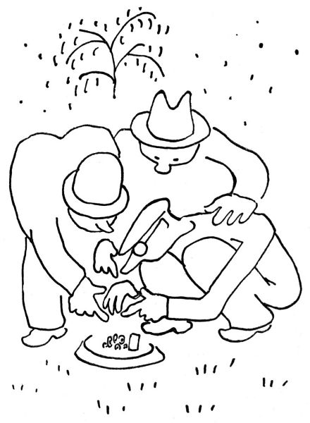

Zahradníkův máj
Hle, pro samé starosti s kypřením a rytím, výsadbou a řezem jsme se dosud nedostali k největší radosti a intimní pýše zahradníkově, k jeho skalce čili alpinu. Alpinum se tomu říká patrně proto, že tento kousek zahrady umožňuje svému pěstiteli provozovat krkolomný alpinismus; chce-li třeba vysadit tuhle mezi ty dva kameny maličkou androsaci, tu se musí jednou nohou lehce postavit tady na ten kámen, který se drobet viklá, a druhou vznosně balancovat ve vzduchu, aby nerozšlápl polštářek erysima či kvetoucí tařičky; musí použít nejsmělejších roznožů, dřepů, zvratů, poloh, postojů, poskoků, výpadů, předklonů, chvatů a cviků, aby mohl sázet, kypřit, dloubat a plet mezi malebně narovnanými a ne zrovna pevně sedícími kameny své skalky.
Pěstování skalky se takto zjevuje jako vzrušující a vysoký sport; nadto vám poskytne bezpočtu nadšených překvapení, když třeba v závratné výši jednoho lokte objevíte ve skalce kvetoucí trs běloučké protěže nebo hvozdíku ledovcového nebo jiných, jak se tomu říká, dítek vysokohorské flóry. Ale co vám budu povídat; kdo si nevypiplal ty všelijaké miniaturní zvonečky, lomikameny, silenky, rozrazily, písečnice, draby a iberisy a tařice a plaménky (a dryas a trýzel a netřesky a rozchodníky) a levanduli a mochnu a sasanku a rmen a huseník (a šater a edrajanthus a různé mateřídoušky) (a iris pumila a olympskou třezalku a oranžový jestřábník a devaterník a hořec a rožec a trávničku a linárii) (nezapomínejme ovšem na aster alpinus, plazivý pelyněk, erinus, pryšec, mydlici a erodium a hutchinsii a paronychii a thlaspi a aethionema, aniž ovšem na hledík, kociánek a nesčetné jiné překrásné kvítky, jako je například petrocalis, lithospermum, astragallus a jiné neméně důležité, jako jsou prvosenky, horské fialky a jiné), tedy kdo si nevypěstoval tyto všechny květinky, nepočítaje mnohých jiných (z nichž uvádím aspoň onosma, acaenu, čapí nůsek, bahii a saginu a cherlerii), ten ať nemluví o všech krásách světa; neboť neviděl to nejlíbeznější, co tato drsná země v jakési chvilce rozněžnění (jež trvala jen několik set tisíc let) stvořila. Kdybyste viděli takový polštářek dianthu Musalae, posetý nejrůžovějšími kvítky, jaké kdy –
Ale co vám to budu povídat; jen pěstitelé skalek znají to sektářské uchvácení.
Ano, neboť pěstitel skalky není jenom zahradník, nýbrž sběratel, což ho zařazuje mezi těžké maniaky. Ukažte mu, že se vám ujala třeba campanula Morettiana; přijde vám ji v noci ukrást, vraždě a stříleje, neboť nemůže být déle bez ní živ; je-li příliš zbabělý nebo příliš tlustý, než aby vám ji ukradl, bude plakat a škemrat, abyste mu od ní dali sebemenší oplégr[10]. Hle, to máte z toho, že jste se před ním honosili a vypínali se svými poklady.
Nebo se mu přihodí, že najde v zahradnickém závodě květináček bez jmenovky, z něhož vyráží něco zelenkavého. „A copak to máte tuhle?“ vyhrkne na zahradníka.
„Tohle?“ praví zahradník rozpačitě, „to je nějaký zvonek; sám nevím, který by to mohl být –“
„Dejte mi ho,“ povídá maniak, předstíraje lhostejnost.
„Ne,“ povídá zahradník, „ten neprodám.“
„No, koukejte,“ začne dojemně maniak, „já už od vás beru tak dlouho, řekněte, copak vám to udělá, no ne?“

Po mnoha řečech, opětovně odcházeje a znovu se vraceje k záhadnému a bezejmennému hrnéčku, dávaje zřetelně najevo, že bez něho vůbec neodejde, i kdyby tu měl obcházet devět neděl, tedy využiv veškerých sběratelských kejklů a nátlaků odnáší si konečně pěstitel skalky tajemný zvonek domů, vybere mu nejlepší lůžko ve své skalce, zasadí jej s nekonečnou něžností a denně jej chodí zalévat a rosit s veškerou pozorností, které je tato vzácnost hodna. A zvonek opravdu roste jako z vody.
„Koukejte,“ ukazuje jej pyšný majitel svým hostům, „to je zvláštní druh zvonku, že? Ještě nikdo mi jej nemohl určit; to jsem zvědav, jak pokvete.“

„To je zvonek?“ povídá host. „Má to listy skoro jako křen.“
„Kdepak křen,“ namítá majitel. „Křen má přece o mnoho větší listy, a ne tak lesklé. Je to určitě zvonek; ale možná,“ dodává skromně, „že to je species nova.“
Následkem hojné vláhy roste dotyčný zvonek s rychlostí úžas budící. „Koukejte se,“ káže jeho majitel, „vy jste říkal, že má listy jako křen. Viděl jste už někdy křen s tak obrovskými listy? Panečku, to je nějaká campanula gigantea; ta bude mít květy jako talíře.“
Nuže, nakonec ten jedinečný zvonek počne vyhánět květný stvol, a na něm – lnu je to přece jenom křen; čertví jak se dostal zahradníkovi do toho květináčku!
„Poslouchejte,“ povídá host po nějaké době, „kdepak máte ten obrovský zvonek? Ještě nekvete?“
„Kdepak, ten mi zašel. To víte, tyhle choulostivé a vzácné druhy – Byla to asi nějaká hybrida.“
On je to vůbec kříž s opatřováním květin. V březnu vám zahradník vaši objednávku obyčejně nevyřídí, protože třeba mrzne a kultury ještě nejsou venku; v dubnu vám ji rovněž nevyřídí, protože má těch objednávek příliš mnoho; a v máji ji nevyřídí proto, že už má většinou vyprodáno. „Petrklíče už nejsou; ale chcete-li, dám vám místo nich diviznu, ta taky kvete žlutě.“

Ale někdy se přece jenom stane, že vám pošta donese koš s objednanými kulturami, sláva! Zrovna tadyhle do rabátka potřebuju něco hodně vysokého mezi oměje a ostronožky; dáme tam dictamnus, zajisté, zvaný též třemdava čili hořící keř; sazenička, kterou poslali, je sic nějaká droboučká, ale ono to poroste jako z vody.
Uplyne měsíc, a sazenička nějak nechce vyrůst; vypadá to jako nizoučká tráva – kdyby to nebyl dictamnus, řekl bys, že to je dianthus. Musíme to notně zalévat, aby to rostlo; a vida, květy to má jakési růžové –
„Koukejte se,“ ukazuje zahrádkář zkušenému hosti, „to je nizoučký dictamnus, že?“
„Chcete říci dianthus,“ opravuje host.
„To se rozumí, dianthus,“ praví domácí pán honem, „já jsem se přeřekl; zrovna jsem totiž myslel na to, že by se mezi těmi vysokými perenami dělal líp dictamnus, nemyslíte?“
Každá zahradnická příručka vám poví, že „nejlépe je opatřit si kultury ze semínka“. Ale nepraví vám, že pokud se týče semínek, má příroda své zvláštní zvyky. Je přírodní zákon, že buď vám nevzejde ani jedno ze zasetých semínek, nebo že vzejdou šmahem všechna. Člověk si řekne: „Tady by se mně dobře dělal nějaký ten dekorativní bodlák, řekněme cirsium nebo onopordon.“ I koupí si po sáčku semen obojího, vyseje a raduje se z toho, jak mu semínka krásně vzcházejí. Po čase je potřeba je rozsadit, i těší se zahradník, že má sto šedesát hrnéčků s bujnými semenáčky; říká si, že tohle pěstění ze semínek je přece jenom nejlepší. A pak už ty semenáčky mají přijít do půdy; ale co si má člověk počít se sto šedesáti bodláky? Už je napíchal, kde vůbec byl ždibec půdy, a ještě mu jich zbývá přes sto třicet; bodejť, copak je zahodí do smetí, když se s nimi tolik napiplal?
„Pane sousede, nechtěl byste nějakou sazeničku cirsia? Je to moc dekorativní, víte?“
„No, třeba.“
Chválabohu, pan soused dostal třicet sazeniček, se kterými teď rozpačitě běhá po zahradě, hledaje, kam by je píchnul. Ještě zbývá soused dole a naproti –
Bůh jim pomáhej, až jim z toho narostou ty dvoumetrové dekorativní bodláky!